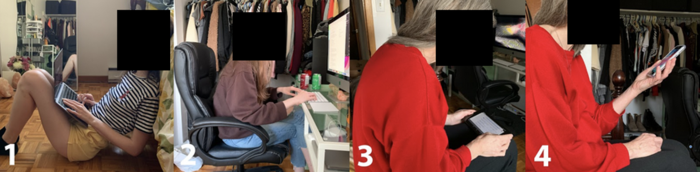
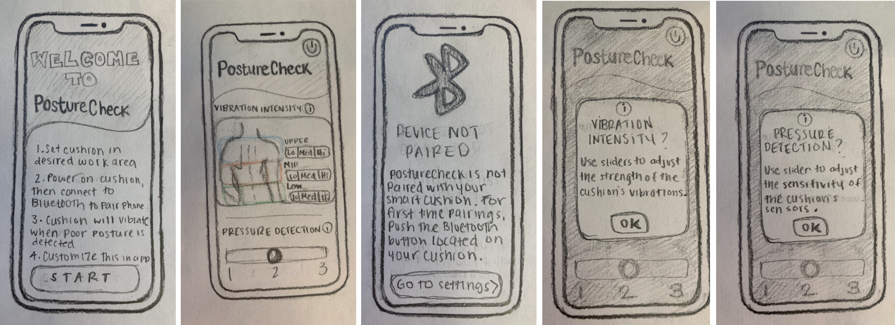
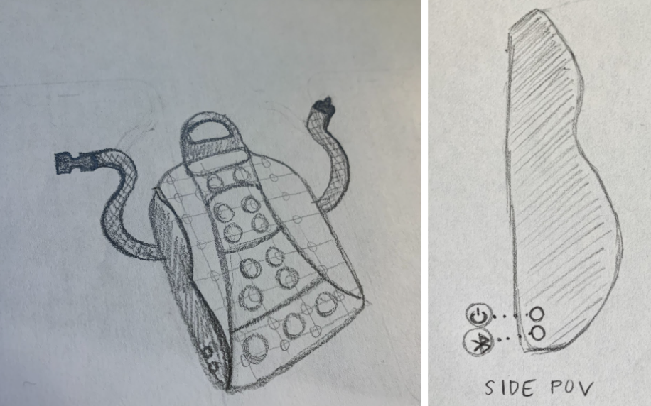
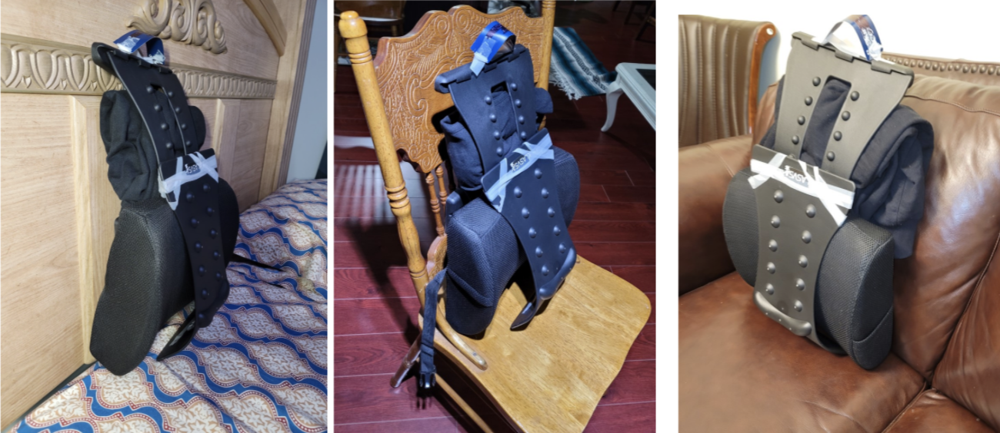
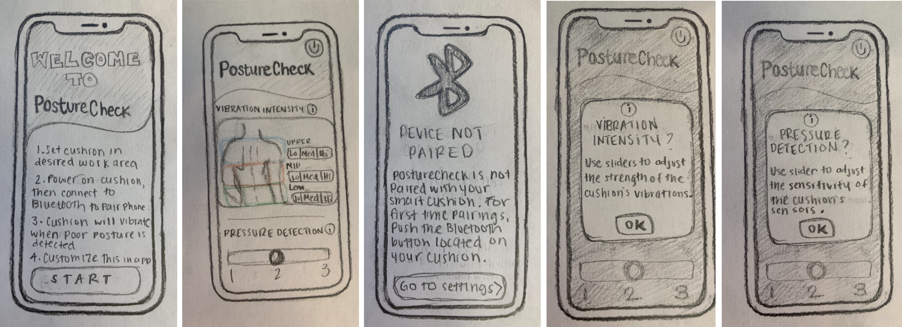
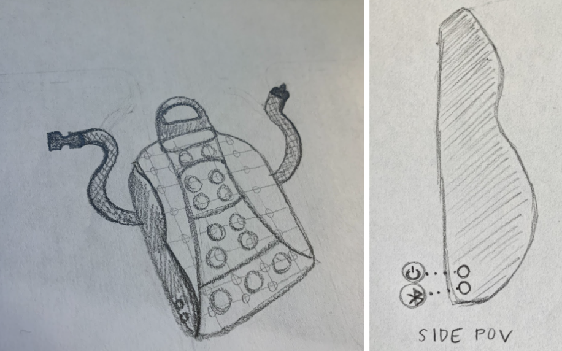
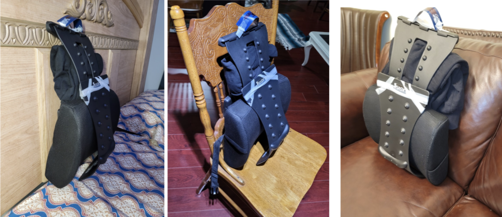
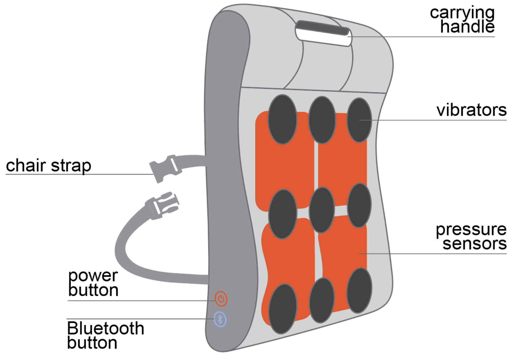

Year
2020Length
12 wksTitle
PostureCheckMedium
Mobile AppDetails
PostureCheck is an app designed by myself and a team of three in response to the adverse physiological habits that prolonged WFH conditions have imposed on the body.
The Problem
With the COVID lockdown came a shift to remote work and learning, as well as an increased amount of leisure time spent at home. A significant amount of this time is spent on devices, typically at a desk in front of a computer or hunched over a phone.
Considering this was our “new normal” as students and designers, myself and a team of three collaborated on designing an ergonomic solution to counter habitual poor posture. I acted as the project manager of the team, leading the research, user interviews, ideation and synthesis phases.
Considering this was our “new normal” as students and designers, myself and a team of three collaborated on designing an ergonomic solution to counter habitual poor posture. I acted as the project manager of the team, leading the research, user interviews, ideation and synthesis phases.
The Process

↑ Unobtrusive user observation documentation.
To guide our design solution, unobtrusive user observations were first conducted to gain a better understanding of the problem of poor posture, and to observe potential patterns or trends in user behavior. Due to the constraints of the lockdown, observations were limited to only the people we lived with. Accordingly, twelve family members working and/or learning remotely were observed while using different technological devices in various areas of the home, such as on the couch, in bed, or at a chair and desk. Despite our limited sample size, our observations revealed behavioral trends that were consistent with secondary research findings.
These trends are:
1. Poor posture habits after extended periods of technological device usage
2. Lack of habitual posture correction
3. Lack of consistent ergonomic seating in workstation and leisurely areas
 ↑ Lo-fi prototypes for the mobile portion of PostureCheck.
 ↑ Lo-fi prototype for the posture correction cushion.
Following this, low fidelity prototypes for a posture correction cushion and application technology were tested twice with a total of thirteen users, and significant design changes were made between each usability evaluation round based on findings.
 ↑ An interactive prototype for the posture correction cushion used in user testing.
The third round of usability testing involved seven users, and high-fidelity, interactive prototypes of the smart cushion and app were tested. Usability evaluations followed the structure of a “think-aloud” of six scenarios to simulate real user interactions and behaviors with the product, since in-person testing was not possible at this time given COVID restrictions.
To guide our design solution, unobtrusive user observations were first conducted to gain a better understanding of the problem of poor posture, and to observe potential patterns or trends in user behavior. Due to the constraints of the lockdown, observations were limited to only the people we lived with. Accordingly, twelve family members working and/or learning remotely were observed while using different technological devices in various areas of the home, such as on the couch, in bed, or at a chair and desk. Despite our limited sample size, our observations revealed behavioral trends that were consistent with secondary research findings.
These trends are:
1. Poor posture habits after extended periods of technological device usage
2. Lack of habitual posture correction
3. Lack of consistent ergonomic seating in workstation and leisurely areas
 ↑ Lo-fi prototypes for the mobile portion of PostureCheck.
 ↑ Lo-fi prototype for the posture correction cushion.
Following this, low fidelity prototypes for a posture correction cushion and application technology were tested twice with a total of thirteen users, and significant design changes were made between each usability evaluation round based on findings.
 ↑ An interactive prototype for the posture correction cushion used in user testing.
The third round of usability testing involved seven users, and high-fidelity, interactive prototypes of the smart cushion and app were tested. Usability evaluations followed the structure of a “think-aloud” of six scenarios to simulate real user interactions and behaviors with the product, since in-person testing was not possible at this time given COVID restrictions.
The Solution

↑ Hi-fi prototype of the PostureCheck posture correction cushion.
↑ Hi-fi prototype of the PostureCheck mobile application for preference customization.
Our final design is a prototype for PostureCheck: a posture correction technology consisting of a smart cushion that dispenses biofeedback in the form of vibrations to prompt posture correction, and an accompanying mobile application for customization of its vibration intensity and pressure detection settings.
Our “final” prototypes are final in that they had 100% usage success rates1 and the existing functionality was refined. Nonetheless, PostureCheck is presently a MVP, and we have identified areas for improvement in both the app (particularly with refining the UI to be a more visual experience) and the engineering of the cushion (by exploring mechanical features such as an auto-correcting angle feature) to improve its functionality.
1Based on our round of beta testing
↑ Hi-fi prototype of the PostureCheck posture correction cushion.
↑ Hi-fi prototype of the PostureCheck mobile application for preference customization.
Our final design is a prototype for PostureCheck: a posture correction technology consisting of a smart cushion that dispenses biofeedback in the form of vibrations to prompt posture correction, and an accompanying mobile application for customization of its vibration intensity and pressure detection settings.
Our “final” prototypes are final in that they had 100% usage success rates1 and the existing functionality was refined. Nonetheless, PostureCheck is presently a MVP, and we have identified areas for improvement in both the app (particularly with refining the UI to be a more visual experience) and the engineering of the cushion (by exploring mechanical features such as an auto-correcting angle feature) to improve its functionality.
1Based on our round of beta testing